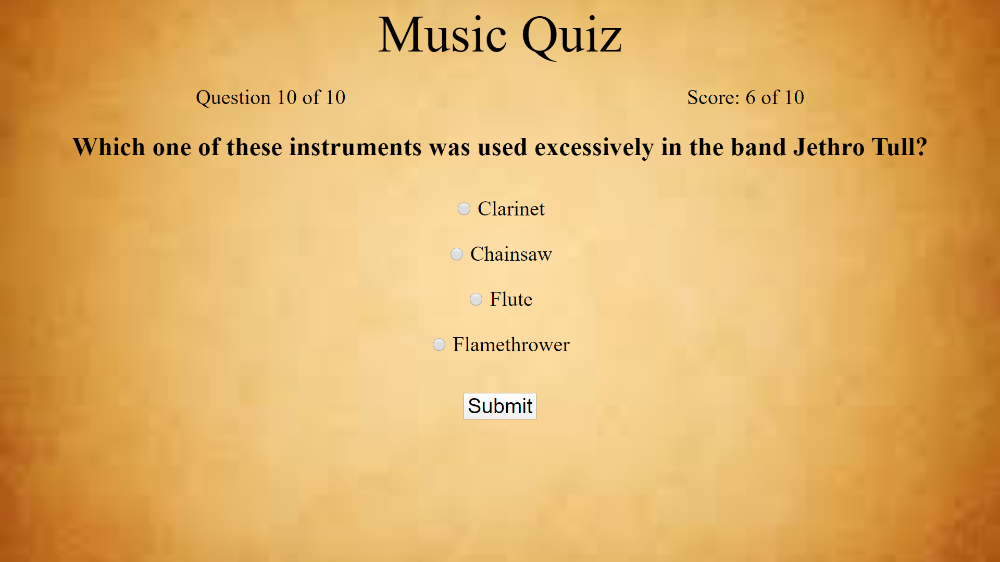
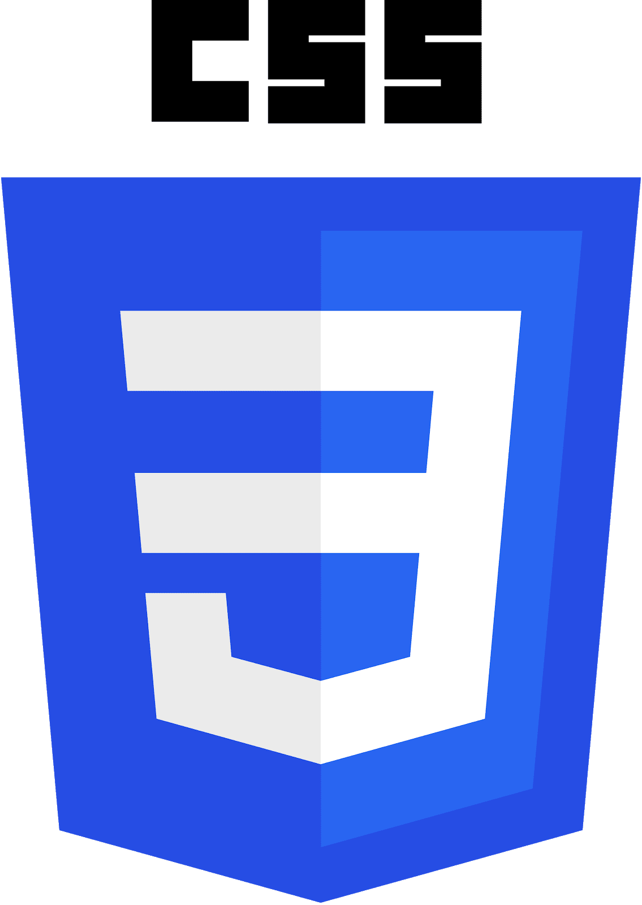
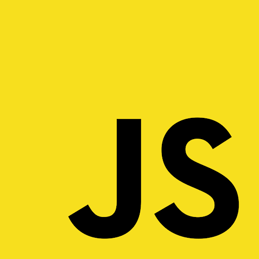
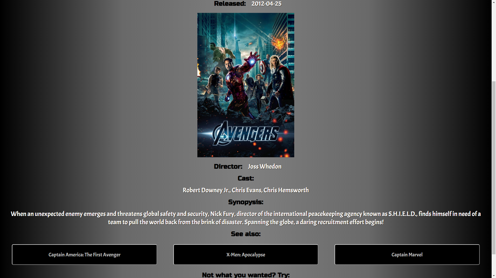

Hi. My name is Nick and I am a full stack developer.
About
Here are a few things about meI love using html, CSS, JavaScript, jQuery, React, Node, and Express. My favorite parts of front end development is creating the perfect user experience. My favorite part of server side development is creating my own middleware functions to make my API airtight. I enjoy being on a team and having others to collaborate with. I look forward to working in an innovative and creative team. I am a go with the flow kind of person but also very hardworking and dedicated.
Portfolio
Music Quiz  Live|RepoI designed a quiz app to test users on their musical knowledge. It covers subjects from music theory to composers to instrumentation.
Tech Used:   When Was That?  Live|RepoThis app uses the lastfm API and The Movie Database API to allow users to look up the year their favorite song or movie premiered.
Tech Used:

 Trivia Tracker
Trivia Tracker
Trivia Tracker is a way for users to track the progress of their pub trivia team(s). Using Trivia Tracker users can make their own teams, add their friends, and record events and winnings.
Tech Used:
 Bookmark!
Bookmark!
Bookmark! is a site designed for avid readers who would like a consistant way of tracking their reading history. After registering, users can login and start adding books to their profile. This app uses Google's open source book api to make sure users can find the correct author and cover art for their book of choice.
Tech Used:
Contact
You can contact me by phone at 608-443-8395 or by email at hillan02@gmail.com I look forward to hearing from you soon.